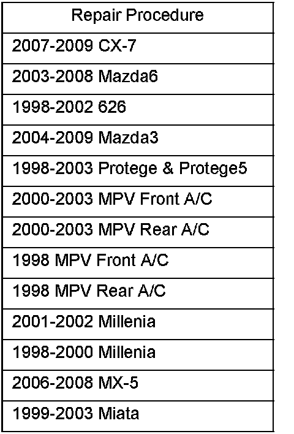
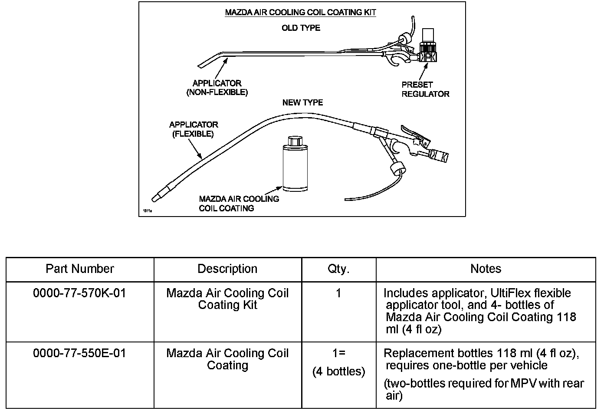

Information
REPAIR PROCEDURE1. Verify customer concern.
2. Verify the evaporator drain has no blockage.

3. Apply "Mazda Air Cooling Coil Coating" according to the instructions. Refer to the table for the applicable repair instructions.
NOTE:
^ Follow the attached instructions completely to ensure an effective repair. If insufficient care is taken on the drying sequence of product, the coating will not last, and the concern will reoccur.
^ If the odor is still present after treatment, it may be necessary to remove and clean the evaporator, the evaporator foam, and the inside of the cooling unit housing with a mild dish soap and water solution. To avoid damage to components, do not clean with bleach. See Workshop Manual section 07 for removal instructions.
WARNING:
^ When using this product, avoid skin and eye contact. Wear safety glasses and gloves, and avoid breathing vapors.
^ Read all the safety and first aid instructions on the back of the Mazda bottle.
4. Verify repair.

PART(S) INFORMATION
WARRANTY INFORMATION
Note:
This repair is not covered by warranty.